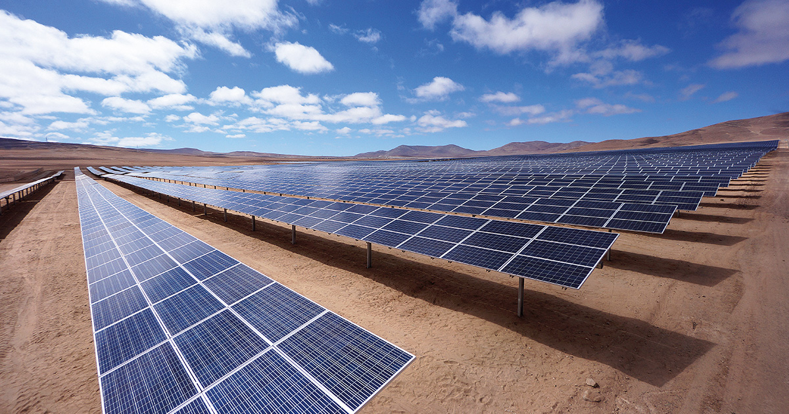

Las energías renovables son aquellas que se obtienen de fuentes naturales que se regeneran de forma continua. Estas fuentes incluyen la energía solar, eólica, hidráulica, geotérmica y biomasa.
Existen diferentes tipos de energías renovables, cada una con sus características y aplicaciones específicas. A continuación, se presentan algunas de las más comunes:
La energía eólica se genera a partir del viento. Se utilizan aerogeneradores para convertir la energía cinética del viento en energía eléctrica.
La energía solar se obtiene a partir de la radiación solar. Se puede aprovechar mediante paneles solares fotovoltaicos o térmicos.
